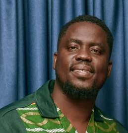
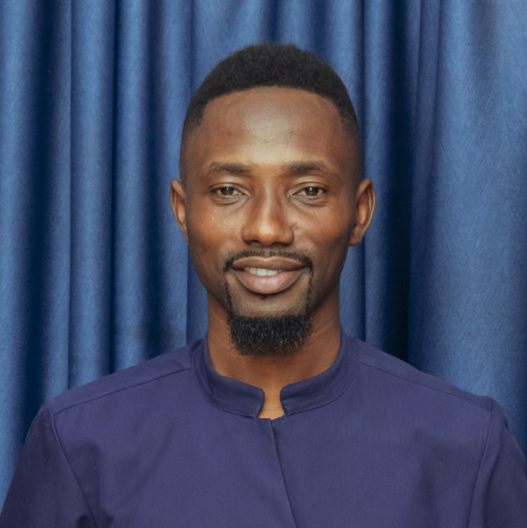
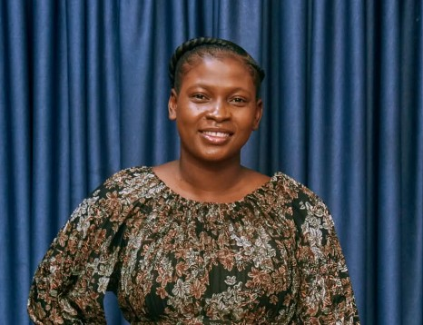
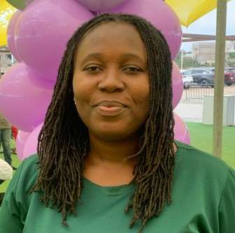

Two couples, one shared conviction, and a vision that grew into a community.

8+ Years of Marriage, Two Sons

8+ Years in Marriage, Two Sons & a Daughter
To see couples living as one flesh in Christ, united in purpose, grounded in Kingdom principles, and equipped to build marriages that are strong, purposeful, and life-giving, becoming places of refuge, strength, and lasting Kingdom legacy.
At One Flesh Community (OFC), we exist to build a Christ-centered community where singles and couples are equipped to grow in Christ, build healthy relationships, strengthen marriages, and establish homes that reflect God's design and influence generations. OFC is a community where singles prepare, individuals grow, couples strengthen, families flourish, and generations are impacted, all while pursuing God's purposes together with Jesus Christ at the center.
Walk With One Another
Grow in Christ
Build Healthy Relationships
Prepare for Marriage
Strengthen Marriages
Build Christ-Centered Homes
Connect, Celebrate & Belong
Support When More Is Needed
Live With Purpose & Build Legacy
Vision, doctrine, and major decisions rest with the founding couples together.
Two Founding Couples · Collective Authority · Vision, Doctrine & Major Decisions
Mr. Kofi Edu-Ansah
Operations & Strategy
People, Community & Care
Finance & Admin




Every member's journey starts with a simple form.
Join One Flesh Community